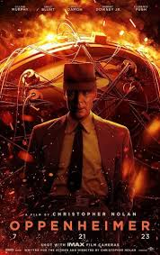

Fig.1 - Bad Boys is an American action comedy film series that revolves around two Miami police detectives, Mike Lowrey (Will Smith) and Marcus Burnett (Martin Lawrence). The series is known for its high-octane action sequences, comedic moments,Fig.2 - Zombie on the Mountain is a 2022 Egyptian comedy film directed by Amr Salah and starring Ali Rabie, Hamadi Al-Mirghani, and Donia Samir Ghanem. The film follows a popular Egyptian folk music band who get stranded in a remote village after their car breaks down. They soon discover that the village is inhabited by zombies, and they must fight for their survival.Fig.3 - One Two is a 2022 Egyptian comedy film directed by Mohamed Shaker Kheireddine and written by Hisham Dabour. The film stars Ahmed حلمي, Ruby, سيد رجب, أحمد مالك, عمرو عبد الجليل, نسرين أمين, and Noor Ehab. It was released in Egypt on May 1, 2022.Fig.4 - Godzilla vs Kong: The New Empire is a 2024 American monster film directed by Adam Wingard. It is a sequel to the 2021 film Godzilla vs. Kong and the fourth installment in Legendary's MonsterVerse franchise. The film stars Rebecca Hall, Brian Tyree Henry, Dan Stevens, and Alexander Skarsgård.

Fig.5 - Oppenheimer is a 2023 American biographical drama film written, directed, and produced by Christopher Nolan. It follows the life of J. Robert Oppenheimer, the American theoretical physicist who led the Manhattan Project during World War II that developed the first atomic bomb.
These films are among the best and most famous films that I have watched, and I rate them all very highly. I advise everyone to watch them. You will not regret it.